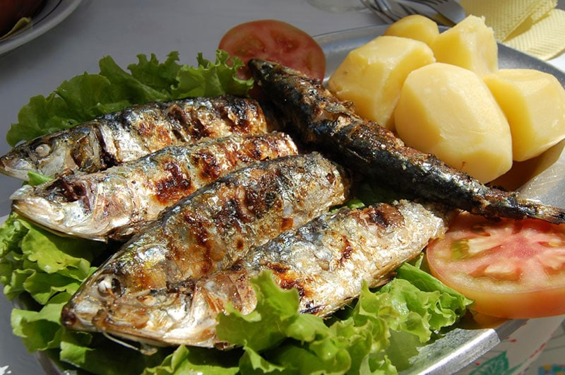

PREPARATION: Step 1 - Preheat the oven to 200°C (400°F) Step 2 - Place the cod fillets in an ovenproof dish. Season with salt and pepper (use approximately 1 tsp of salt for the 800 g of fresh cod). Top the fish fillets with the garlic cloves, the bay leaf, the rosemary, the red onion and the cherry tomatoes. Drizzle with olive oil. Step 3 - Leave the skin on the potatoes and wash them thoroughly. Arrange them on a baking sheet and sprinkle them with salt. Step 4 - Place both the potatoes and the fish dish in the oven. Let the cod cook for 15 minutes and the potatoes cook for 40 minutes. Step 5 - Add to the potatoes to the cod dish, put it back in the oven 5 minutes or until the fish is warm enough to be served. Enjoy!
INGREDIENTS: 4 fresh cod fillets of 200 g each 1 bay leaf 1 rosemary sprig 600 g of baby potatoes 3 garlic cloves, chopped 1 red onion cut in 6-8 quarters 200 ml of F olive oil (or other high quality olive oil) 200 g of cherry tomatoes 30 g of sliced black olives Salt
PREPARATION: Step 1 - Lay the sardines on a clean kitchen towel, and remove any excess moisture from them. Refrigerate until ready to grill. Step 2 - Preheat a grill or broiler to medium high, and make sure the grates are VERY clean (to prevent the fish from sticking). Step 3 - In a mixing bowl, combine the diced tomatoes, 1/2 cup olive oil, olives, parsley, basil, onion, garlic, salt and pepper, mix well, then set aside at room temp until you are ready to serve. Step 4 - Place the sardines on a rimmed baking sheet, then drizzle with 1/4 cup olive oil, turning to coat completely and season with the remaining salt and pepper. Step 5 - Oil the grill grates well, then place the sardines directly on the grates. Step 6 - Cook undisturbed, until the skin is crispy and slightly charred (2-3 minutes), at which point they will release easily from the grill. Turn them over, and cook for another 2-3 minutes. Step 7 - While the fish are cooking, brush the lemon slices and tomato slices with some of the remaining olive oil, and season to taste with salt and pepper. Place on the grill with the fish, and cook until they get char marks, about 2 minutes Step 8 - Place the sardines on a serving platter over some lettuce leafs, drizzle with the remaining olive oil and 1/4 cup lemon juice. Serve immediately, with the grilled lemon, tomatoes, potatoes, and the tomato-olive vinaigrette spooned over the top.
INGREDIENTS: 2 lbs fresh sardines, scaled and rinsed 2 cups tomatoes, peeled seeded and diced (about 1 pound) 3⁄4 cup extra virgin olive oil 1⁄3 cup kalamata olive, pitted and coarsely chopped 1⁄3 cup fresh parsley, chopped 2 tablespoons fresh basil, chopped 2 tablespoons red onions, minced 1 tablespoon garlic, minced 1 tablespoon fresh lemon juice 1 teaspoon sea salt 1⁄2 teaspoon black pepper 1⁄2 cup extra virgin olive oil 1 teaspoon sea salt 1⁄2 teaspoon pepper 1⁄4 cup fresh lemon juice 1 lemon, sliced Some lettuce Leafs 4 large potatoes, boiled, peeled and halved 4 tomatoes, sliced
PREPARATION: Step 1 - In a large, enameled cast-iron casserole, heat 1/4 cup of the olive oil until shimmering. Working in 3 batches, sear the pork over moderately high heat until browned all over, about 7 minutes per batch; you should not need to add oil between batches. Using a slotted spoon, transfer the pork to a platter and season with salt. Step 2 - Preheat the oven to 325°. Add half each of the minced onion and garlic to the casserole and cook over moderate heat, stirring occasionally, until softened, about 8 minutes. Add the wine and cook over moderately high heat until reduced by a third, scraping up any browned bits stuck to the bottom of the casserole. Whisk in the tomato paste, then add the water, lemon zest, bay leaves, thyme, paprika and a generous pinch of salt. Return the meat and any accumulated juices to the casserole and bring to a boil. Cover and cook over moderately low heat, stirring occasionally, until the meat is tender, about 1 1/2 hours. Skim the fat from the stew. Step 3 - Meanwhile, brush the baguette slices with 2 tablespoons of the olive oil and arrange on a baking sheet; bake until lightly toasted. Rub the toasts with the whole garlic clove while they're still warm. Step 4 - Add the kale to the stew, a handful at a time; let wilt slightly and add more. Stir in 1/2 cup of the Spicy Red Pepper Sauce; season with pepper. Cover and keep warm over very low heat. Step 5 - In a large saucepan, heat the remaining 2 tablespoons of olive oil. Add the remaining minced onion and garlic and cook over moderate heat until softened, about 8 minutes. Add the cockles and the remaining Spicy Red Pepper Sauce, cover and cook until most of the shells have opened, about 4 minutes. Pour the cockles and their juices into the pork stew and gently stir. Cook for 1 minute, or until heated through. Ladle the stew into shallow bowls. Top with the cilantro and serve with the garlic toasts.
1/2 cup of extra-virgin olive oil 3 pounds of 1-inch-thick boneless pork blade chops, cut into 1-inch cubes 1 very large onion, very finely chopped 5 large garlic cloves—4 minced, 1 whole 1 1/2 cups dry white wine 1 tablespoon of tomato paste 1 1/2 of cups water Finely grated zest of 1 lemon 3 large bay leaves 3 large thyme sprigs 1 1/2 teaspoons of sweet paprika 1 baguette, sliced 1/2 inch thick 1 1/2 pounds kale, inner ribs and stems discarded, leaves coarsely chopped Spicy Red Pepper Sauce Freshly ground pepper 3 pounds of cockles, rinsed 3 tablespoons of chopped cilantro Kosher salt
PREPARATION: For the Shell Step 1 - Pour the ingredients in a bowl and knead them well until they reach a dough like consistency. Step 2 - With the help of a rolling pin, roll the dough very thin, place it in a lightly greased form and with the tip of a knife, make the shape you wish to mold the filling in. The dough should be very thin, almost transparent. Step 3 - Mold the dough into whichever shape you please, or if you have a specific baking mold, use that. For the Filling Step 1 - Pour the sugar in a saucepan on the stove with a glass of water and let it boil until 245 degrees fanrenheit or the sugar has become a syrup with an even consistency. Step 2 - In another saucepan, dissolve the rice flour in 1/2 cup of cold water. Add the boiled sugar syrup to this mixture let it cook on low heat for 5 minutes. Step 3 - Turn off the heat and let it cool slightly and begin adding in the egg yolks. Step 4 - Keep stirring them together and let them cool for another 5 minutes on low heat in the saucepan. Step 5 - Pour the filling into the molded shells.
INGREDIENTS: Making the Shell 3.5 cups pastry flour 1 cup cold water 1/4 cup olive oil Making the Filling 8 egg yolks 1.5 cups sugar 1/2 cup rice flour
PREPARATION: Step 1 - Use a mortar pestle to mix all ingredients apart from the lard and olive oil Step 2 - Once that is done, add the fat and keep on mixing to create a nice paste Step 3 - Add the olive oil and incorporate it well in the paste Step 4 - Spread the paste you created in the insides of the pig as well as a thinner coat on the outside and leave it marinated for at least 4 hours Step 5 - Saw the pig back together then it will be ready for the roasting to start *For roasting the pig* Step 6 - If you decide to do it in the oven, preheat it to 355, then place the pig on a rack with a dripping pan under it Step 7 - Every 30 minutes, remove it quickly from the oven, close the door and gently clean its skin from any moisture it has, then place it back in the oven turning it into different positions each time Step 8 - Repeat this until it is fully cooked (about 2 hours for a 22lbs pig) Step 9 - Serve it hot or cold with orange slices all around it and preserve the drippings if anyone wants to add over the meat
INGREDIENTS: 1 15-25 lbs. Pig 2 Garlic cloves 3 tablespoons of coarse sea salt 1 tablebspoon of freshly grounded black pepper 2 leaves of parsley 1 bay leaf 1 tbsp of extra virgin olive oil 1/2 cup of lard
PREPARATION: Step 1 - Lightly grease a 12 hole muffin tin and pre-heat oven to 200C/180C fan/Gas 6 Step 2 - Put egg, yolks, sugar & cornflour in a pan and mix well together then gradually add the milk until mixture is well mixed and smooth. Step 3 - Place pan on medium heat and stir constantly until mixture thickens and comes to the boil. Remove pan from heat and stir in vanilla extract. Step 4 - Put custard in a glass/ceramic bowl to cool and cover with cling film to prevent skin forming. Step 5 - Cust pastry sheet into two pieces and place them on top of each other. Roll the pastry tightly, from the short side, into a log and cut the log into 12 even sized rounds. Step 6 - On a lightly floured board, roll each round into a disc (approx. 10cm) and press the pastry discs into the muffin tin. Step 7 - Spoon in the cooled custard and bake for 20-25mins until golden on top. Leave to cool in the tin for 5mins then move to a cooling rack to finish cooling although they can be eaten warm.
INGREDIENTS: 1 whole egg (large) 2 egg yolks (large) 115g golden caster sugar 2 tbsp cornflour 400ml full fat (creamy) milk 2 tsp vanilla extract 1 sheet ready rolled puff pastry